library(tidyverse)6 Colour scales and palettes
ggplot’s default hue palette (the muted rainbow you get from just mapping colour/fill with nothing else specified) is fine for a quick look at data, but rarely the right call for anything you’re actually sharing.
This chapter picks a palette deliberately, organised around the shapes a colour variable can take — categorical, ordinal, continuous, and continuous with a meaningful midpoint (diverging) — and for each shows two approaches: colours you supply yourself, and the option currently considered ggplot2’s best-practice built-in for that data shape.
These are formatting functions, applied after the plots structure has been created, changing the colours fed through to the aesthetics that have already been determined. Broadly, functions starting scale_fill affect colours sent to the fill aesthetic, those starting scale_colour affect those sent to the colour aesthetic.x
6.0.1 Function summary
Every function below is part of ggplot2 itself — none of it requires loading a separate package.
| You supply the colours | ColorBrewer | Viridis | |
|---|---|---|---|
| Categorical data | scale_fill_manual() |
scale_fill_brewer() |
scale_fill_viridis_d() — current default |
| Ordinal data | — | — | scale_fill_ordinal() (alias for scale_fill_viridis_d()) |
| Continuous data | scale_fill_gradient() |
scale_fill_distiller() |
scale_fill_viridis_c() — current default |
| Continuous data, binned | — | scale_fill_fermenter() |
scale_fill_viridis_b() |
| Diverging continuous data | scale_fill_gradient2() |
scale_fill_distiller() (diverging palette) — current default |
— (no diverging viridis) |
Every function in the table has a scale_colour_*() equivalent alongside its scale_fill_*() version — which one applies depends on the aesthetic the geom uses, not on the function itself.
6.1 Categorical data
Unordered categories (region, product type, drv) — hues just need to be mutually distinct; there’s no “low” or “high.”
6.1.1 scale_colour_manual()
Colours you supply yourself, for the colour aesthetic (points, lines, outlines).
drv_colours <- c("4" = "#1b9e77", "f" = "#d95f02", "r" = "#7570b3")
ggplot(mpg, aes(x = displ, y = hwy, colour = drv)) +
geom_point(size = 2) +
scale_colour_manual(values = drv_colours)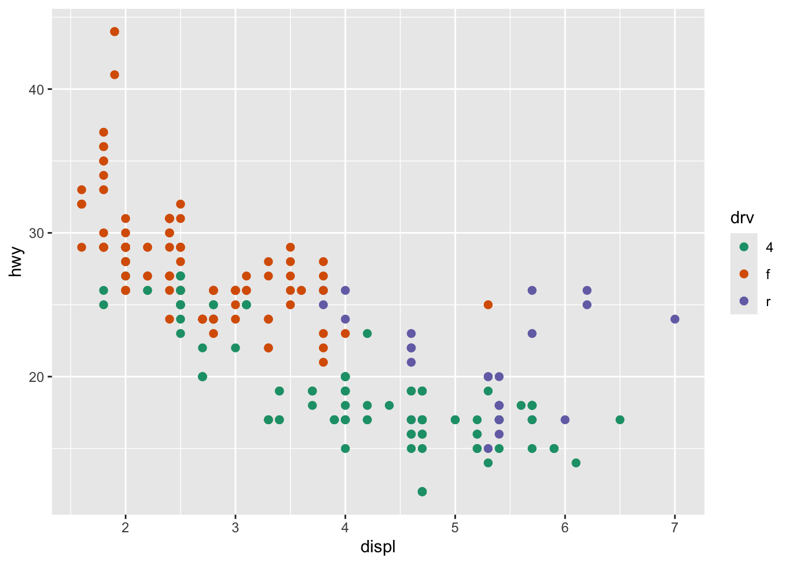
6.1.2 scale_fill_manual()
Same mechanism, for the fill aesthetic (bars, areas, tiles) — which one you need depends on which aesthetic the geom is using, not on personal preference.
ggplot(mpg, aes(x = class, fill = drv)) +
geom_bar() +
scale_fill_manual(values = drv_colours)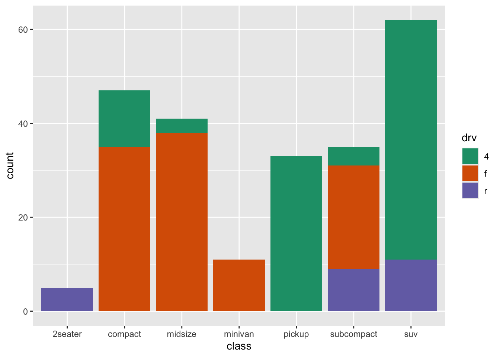
6.1.3 scale_colour_brewer()
A named ColorBrewer palette instead of picking colours by hand. Set1/Dark2 are ColorBrewer’s recommendation specifically for points/lines — higher saturation than the palettes meant for filled areas, because a small point or thin line needs more contrast to stay legible than a large filled shape does.
ggplot(mpg, aes(x = displ, y = hwy, colour = drv)) +
geom_point(size = 2) +
scale_colour_brewer(palette = "Set1")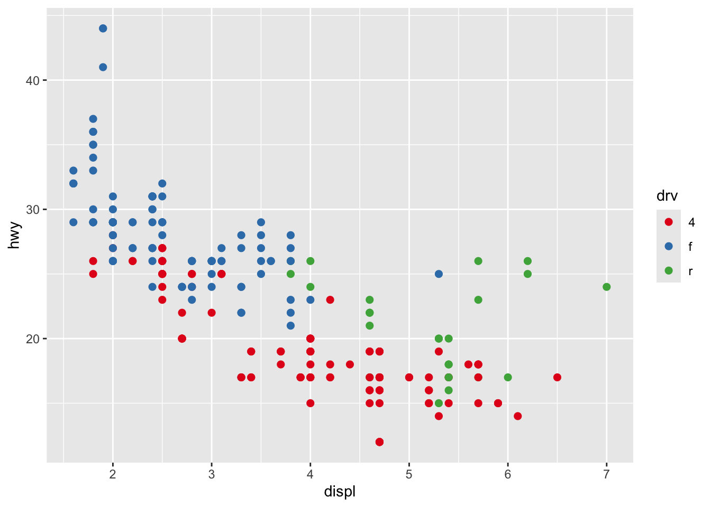
6.1.4 scale_fill_viridis_d()
Built into ggplot2 since 3.0 (2018), and the current default recommendation for categorical data: perceptually uniform and colourblind-safe, sampled at n equally spaced points along the same viridis colourmap used for continuous data below. Unlike a true qualitative palette (Brewer’s Set1/Dark2, or the colourblind-safe Okabe-Ito palette from the separate ggokabeito package), it isn’t capped at a fixed number of categories — but because it’s one continuous ramp rather than colours chosen for mutual contrast, categories get visually closer together as n grows, so it’s best for a handful of groups rather than many.
ggplot(mpg, aes(x = class, fill = drv)) +
geom_bar() +
scale_fill_viridis_d()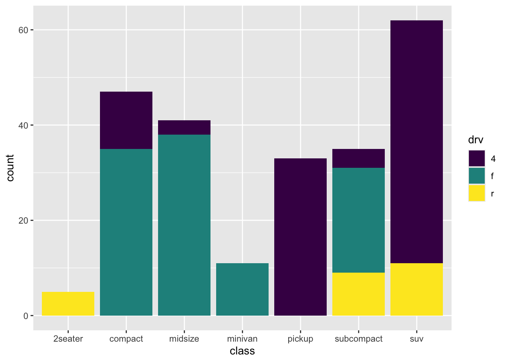
6.1.5 scale_fill_brewer()
An example of ‘Set1’. Also see ‘Dark2’.
ggplot(mpg, aes(x = class, fill = drv)) +
geom_bar() +
scale_fill_brewer(palette = "Set1") 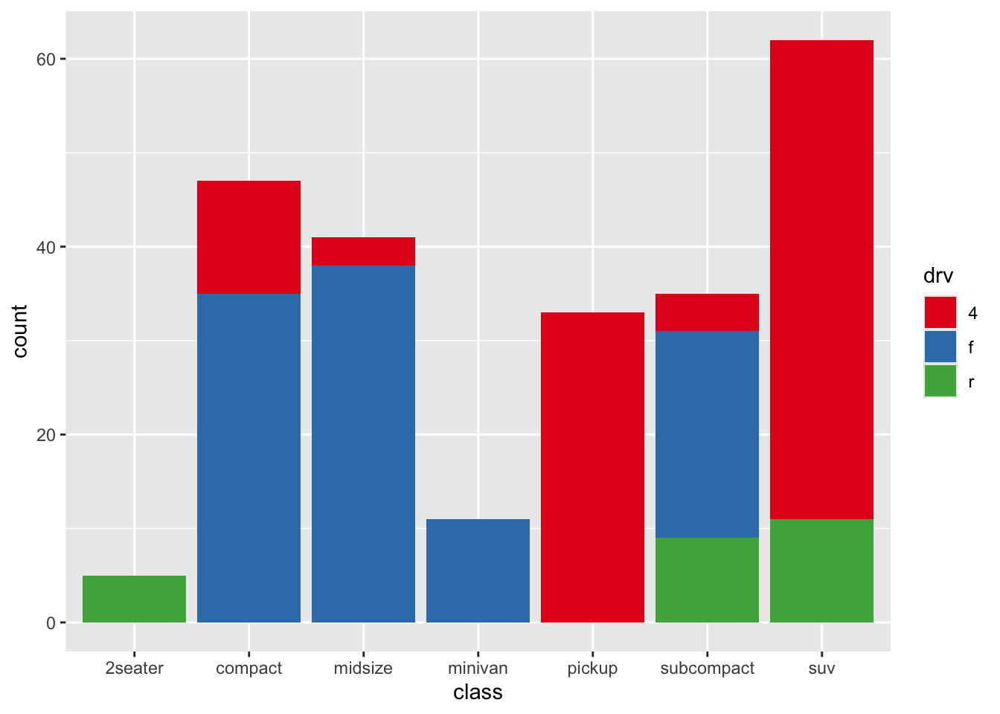
6.2 Ordinal data
For an ordered factor specifically — the categories are still discrete, but their order carries meaning (worst to best, low to high), which an unordered qualitative palette can’t communicate.
6.2.1 scale_fill_ordinal()
A direct alias for scale_*_viridis_d(), and what ggplot2 reaches for automatically if you map an ordered factor without specifying a scale. The naming signals intent even though the output is identical to the viridis example above: diamonds$cut is a genuine ordered factor (Fair < Good < Very Good < Premium < Ideal), so the single viridis ramp reads as “worse to better” rather than as arbitrary, mutually-distinct categories the way it would for an unordered factor like drv.
diamonds_cut_counts <- diamonds %>% count(cut)
ggplot(diamonds_cut_counts, aes(x = cut, y = n, fill = cut)) +
geom_col() +
scale_fill_ordinal()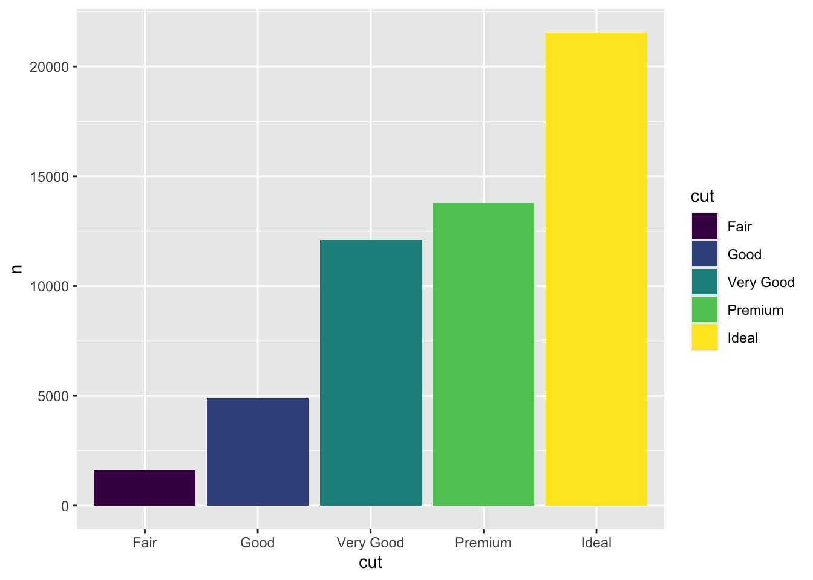
6.3 Continuous data
One variable running low to high (a count, a share, an age), no natural midpoint. Choropleth maps are arguably the clearest real-world case — everyone has seen an election map, and nobody misreads what the “low” and “high” ends of the colour scale mean. USArrests (base R, 1973 US arrest rates by state) plus map_data("state") (state boundary polygons shipped by the maps package — no download, no shapefiles, just data bundled with the package once installed: install.packages("maps")) gives a self-contained version of the same idea.
library(maps)
arrests <- USArrests %>%
rownames_to_column("state") %>%
mutate(
state = tolower(state),
murder_diff = Murder - mean(Murder)
)
arrests_map <- map_data("state") %>%
left_join(arrests, by = c("region" = "state"))6.3.1 scale_fill_gradient()
A two-colour continuous ramp, for a plain low-to-high variable with no natural midpoint — the colours themselves are yours to pick.
ggplot(arrests_map, aes(x = long, y = lat, group = group, fill = Murder)) +
geom_polygon(colour = "white", linewidth = 0.1) +
coord_quickmap() +
scale_fill_gradient(low = "grey95", high = "firebrick") +
theme_void() +
labs(title = "Murder arrests per 100,000 (1973)", fill = "Rate")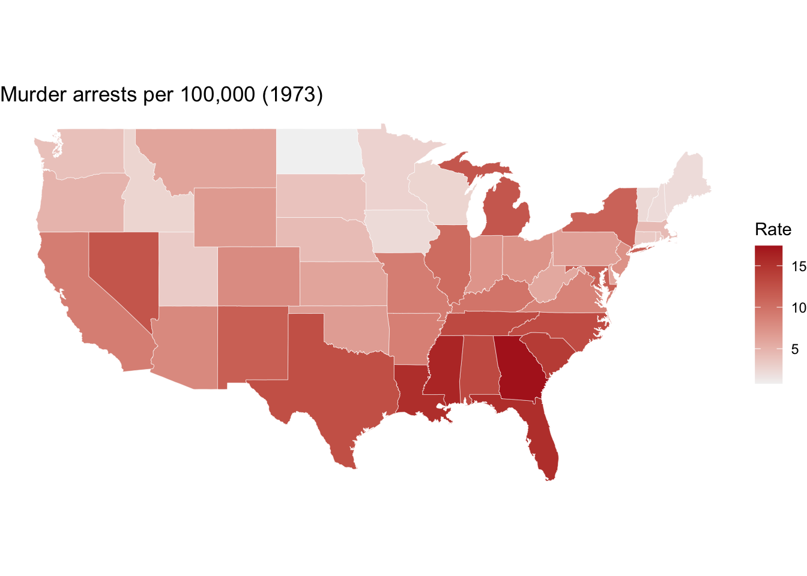
6.3.2 scale_fill_viridis_c()
Built into ggplot2 since 3.0 (2018), and the current default recommendation for continuous data: perceptually uniform (equal steps in the data look like equal steps in colour) and colourblind-safe, properties a hand-picked gradient() isn’t guaranteed to have.
ggplot(arrests_map, aes(x = long, y = lat, group = group, fill = Murder)) +
geom_polygon(colour = "white", linewidth = 0.1) +
coord_quickmap() +
scale_fill_viridis_c() +
theme_void() +
labs(title = "Murder arrests per 100,000 (1973)", fill = "Rate")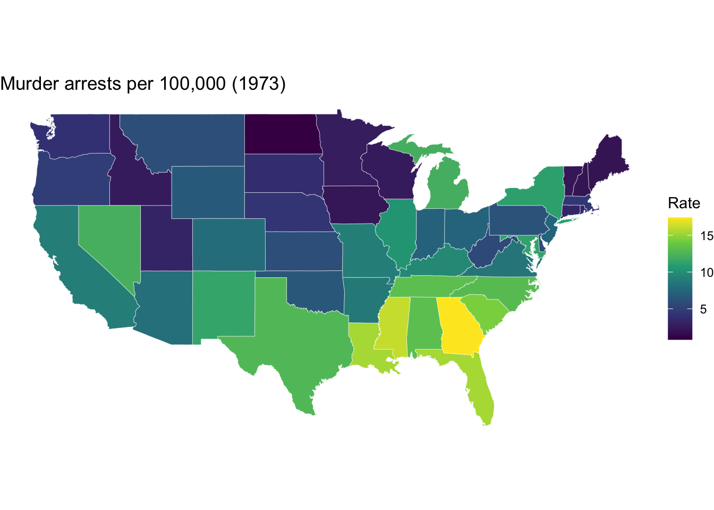
6.3.3 scale_fill_viridis_b()
The binned equivalent — same continuous Murder variable, but cut into a handful of discrete steps rather than shown as a smooth ramp. Trades precision for legibility: harder to read off an exact value, easier to say “that state is in the third band up.”
ggplot(arrests_map, aes(x = long, y = lat, group = group, fill = Murder)) +
geom_polygon(colour = "white", linewidth = 0.1) +
coord_quickmap() +
scale_fill_viridis_b(n.breaks = 5) +
theme_void() +
labs(title = "Murder arrests per 100,000 (1973)", fill = "Rate")6.3.4 scale_fill_fermenter()
Same binning idea, with a Brewer palette instead of viridis — and, like distiller(), needs direction = 1 to read light-to-dark.
ggplot(arrests_map, aes(x = long, y = lat, group = group, fill = Murder)) +
geom_polygon(colour = "white", linewidth = 0.1) +
coord_quickmap() +
scale_fill_fermenter(palette = "Blues", direction = 1, n.breaks = 5) +
theme_void() +
labs(title = "Murder arrests per 100,000 (1973)", fill = "Rate")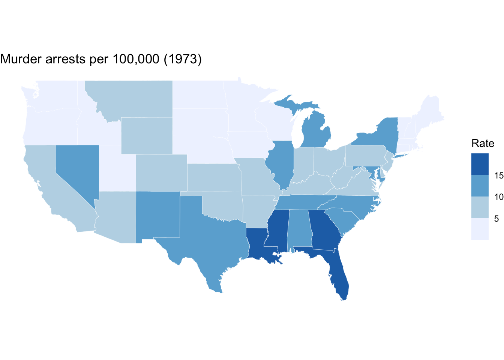
6.4 Diverging continuous data
A variable with a meaningful midpoint (correlation around zero, deviation from an average, agreement scales centred on “neutral”). Same rate as above, re-expressed as each state’s deviation from the national average — “above/below average” is a real, meaningful zero, and it’s an even more natural read on a map than in a bar chart.
6.4.1 scale_fill_gradient2()
A three-colour ramp diverging away from a midpoint, colours supplied directly.
ggplot(arrests_map, aes(x = long, y = lat, group = group, fill = murder_diff)) +
geom_polygon(colour = "white", linewidth = 0.1) +
coord_quickmap() +
scale_fill_gradient2(low = "steelblue", mid = "grey95", high = "firebrick", midpoint = 0) +
theme_void() +
labs(title = "Murder rate vs. national average (1973)", fill = "Deviation")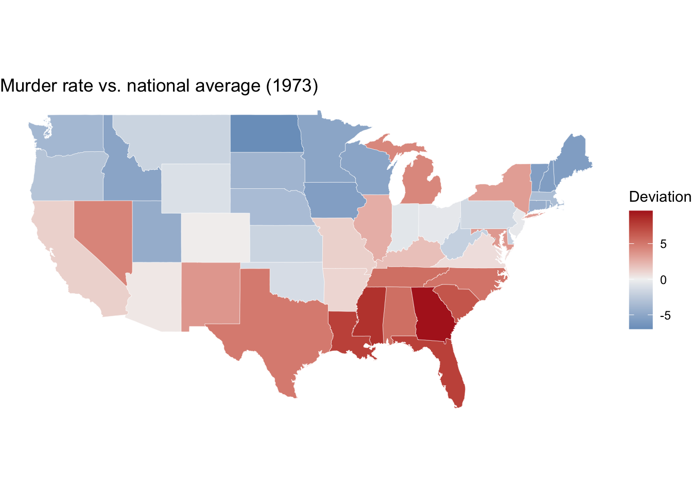
6.4.2 scale_fill_distiller()
Viridis has no diverging variant, so there isn’t a newer built-in option here than a diverging ColorBrewer palette — scale_fill_distiller(palette = "RdBu") remains the current standard for this case. Unlike gradient2(), distiller() has no midpoint argument: it interpolates the palette evenly across whatever limits the data spans, so centring it means forcing symmetric limits around zero. direction = 1 forces light-to-dark for low-to-high (the conventional reading); distiller() otherwise defaults to -1.
murder_diff_extent <- max(abs(arrests_map$murder_diff), na.rm = TRUE)
ggplot(arrests_map, aes(x = long, y = lat, group = group, fill = murder_diff)) +
geom_polygon(colour = "white", linewidth = 0.1) +
coord_quickmap() +
theme_void() +
scale_fill_distiller(
palette = "RdBu",
direction = 1,
limits = c(-murder_diff_extent, murder_diff_extent)
) +
labs(title = "Murder rate vs. national average (1973)", fill = "Deviation")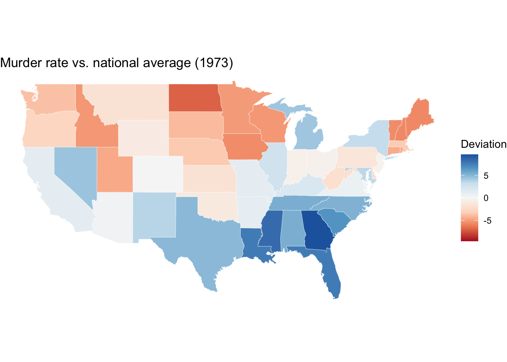
6.5 Browsing the full palette range
Both palette families offer more named options than the single examples picked out above — worth browsing directly rather than guessing from a name.
6.5.1 ColorBrewer
The full function family, by data shape:
scale_colour_brewer()/scale_fill_brewer()— discretescale_colour_distiller()/scale_fill_distiller()— continuous (interpolates a Brewer palette into a smooth ramp)scale_colour_fermenter()/scale_fill_fermenter()— continuous data cut into discrete bins first, then coloured with a Brewer palette
Every Brewer palette at once, grouped into its sequential/diverging/qualitative rows.
RColorBrewer::display.brewer.all()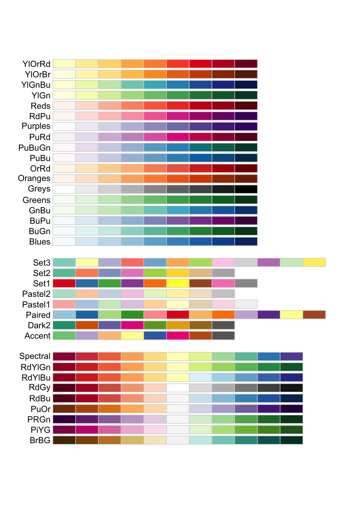
6.5.2 Viridis
The full function family, by data shape:
scale_colour_viridis_d()/scale_fill_viridis_d()— discretescale_colour_viridis_c()/scale_fill_viridis_c()— continuousscale_colour_viridis_b()/scale_fill_viridis_b()— continuous data cut into discrete bins first, then coloured along the viridis ramp
viridisLite (a hard dependency of ggplot2, so already installed — no extra package needed) ships eight colourmaps, selected via the option argument to any scale_*_viridis_*() function: "viridis", "magma", "inferno", "plasma", "cividis", "mako", "rocket", "turbo".
viridis_options <- c("viridis", "magma", "inferno", "plasma", "cividis", "mako", "rocket", "turbo")
viridis_swatches <- map_dfr(viridis_options, function(opt) {
tibble(
option = opt,
position = 1:20,
colour = viridisLite::viridis(20, option = opt)
)
})
ggplot(viridis_swatches, aes(x = position, y = option, fill = colour)) +
geom_tile() +
scale_fill_identity() +
labs(x = NULL, y = NULL, title = "Viridis colourmap options") +
theme_minimal()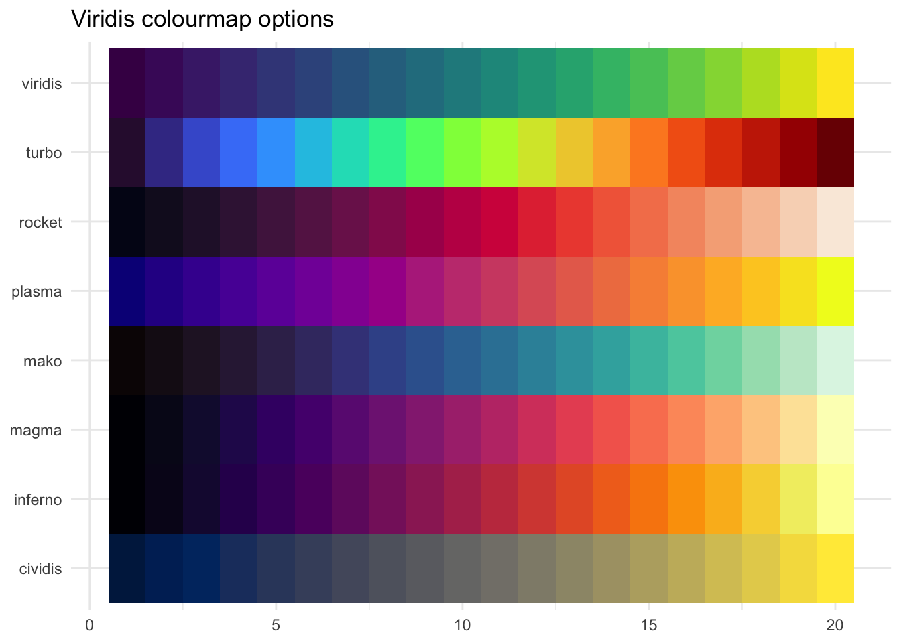